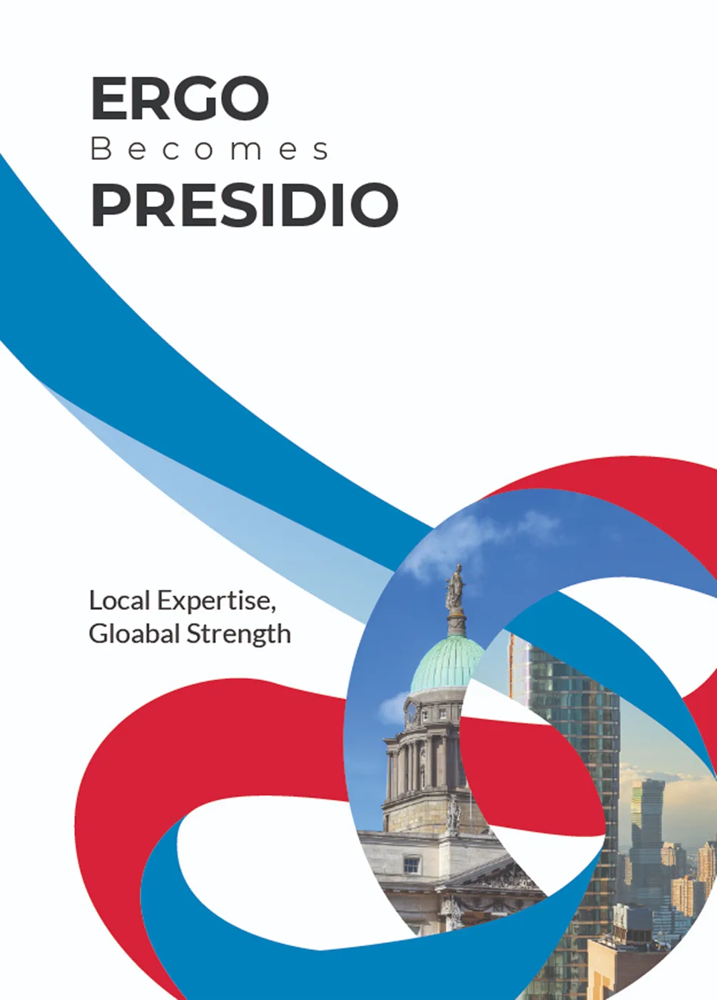
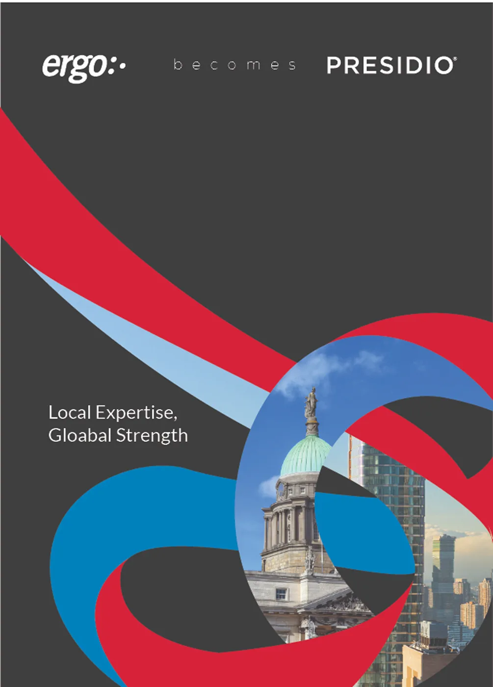
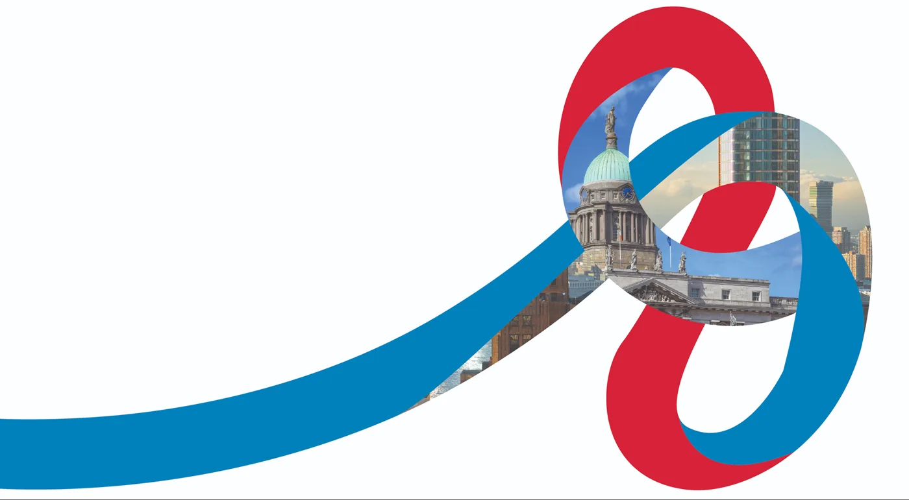
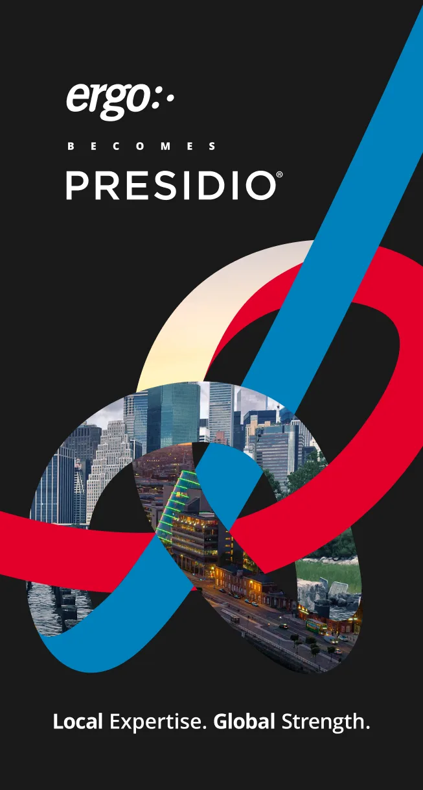
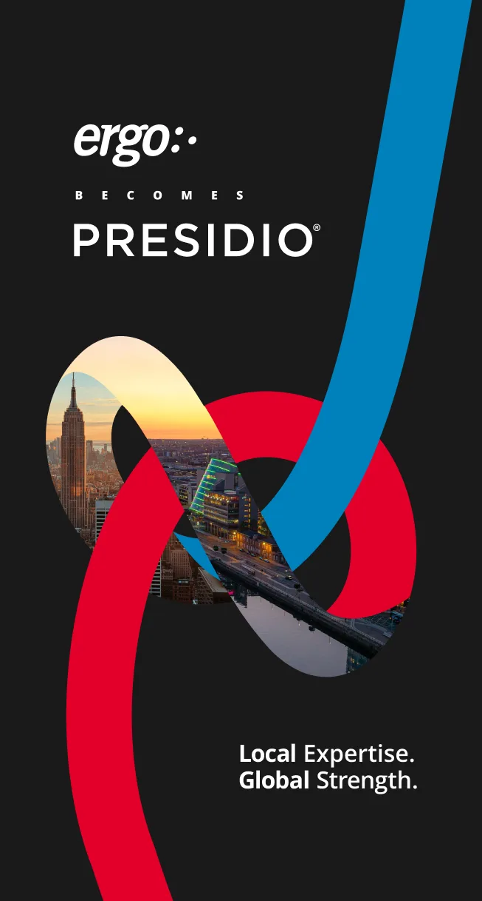
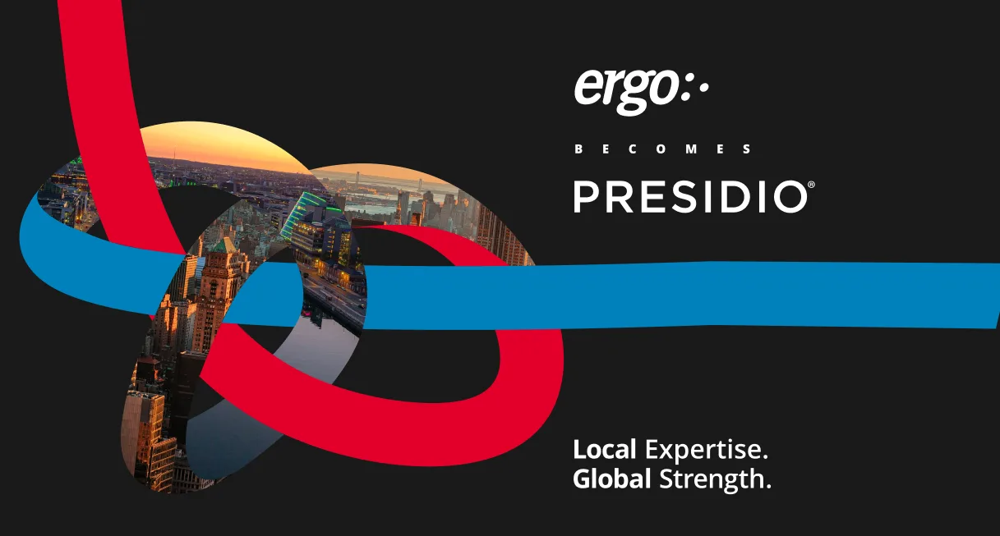
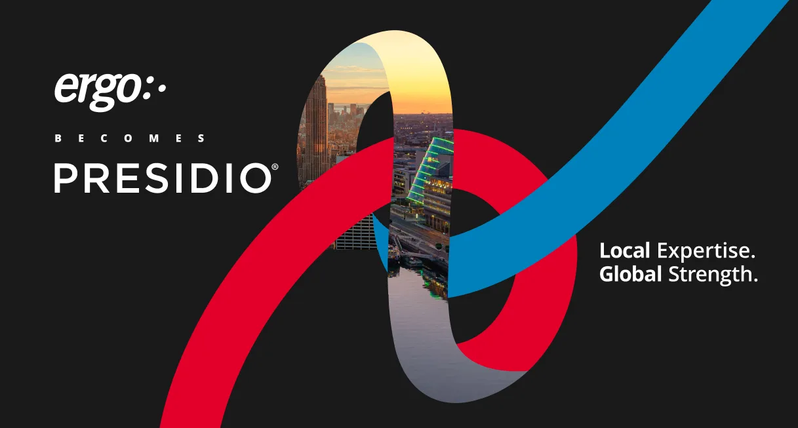
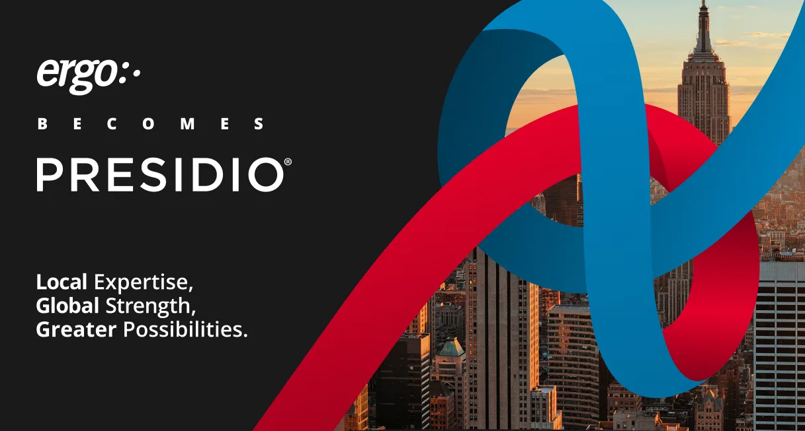
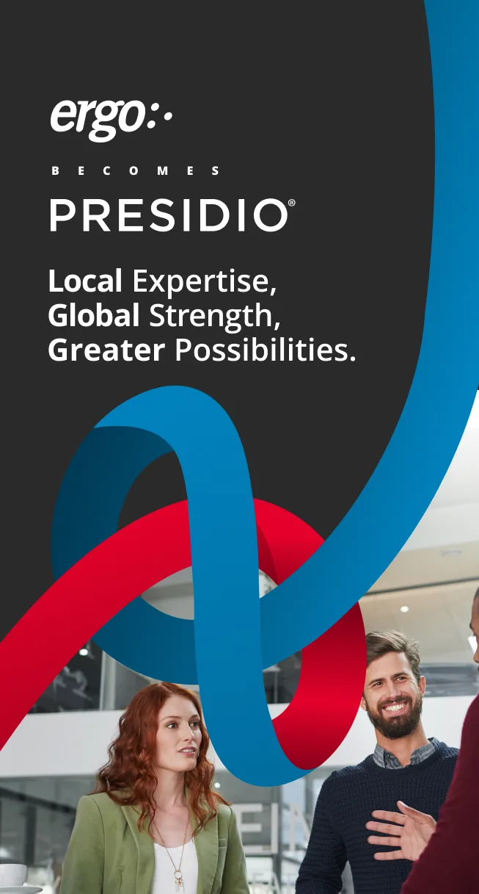
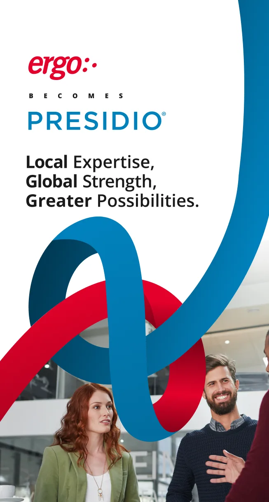

Ergo becomes Presidio.Moving three brands under one name.
A brief that moved mid-project, and three brands that had to join Presidio without unsettling their customers.
3brands moved on one shared transition system
1knot, reused on every touchpoint
68.8Kimpressions across 16 campaign posts, July to October 2026
Impressions are for campaign content on the Presidio Europe LinkedIn page, not for the design alone.
Three brands, one acquisition.
Ergo started in a Dublin shed refilling printer cartridges. It grew into one of Ireland's largest IT service firms. Then Presidio acquired it, and every brand in the group had to make the same move without unsettling the customers who trusted it.
The brief changed halfway through.
The first brief was Local Expertise, Global Strength, to show the global breadth Presidio now gave Ergo, Micromail and BoatyardX. Midway, the line grew into Local Expertise, Global Strength, Greater Possibilities, pointing to the future. That change drove the rest of the design, as the process below shows.
From first idea to final.
The brief changed halfway through, and the design changed with it.
First idea
Global breadth
The brief was Local Expertise, Global Strength: show the global reach Presidio now gave Ergo, Micromail and BoatyardX. The knot sat over the Manhattan and Dublin skylines.



Development
The cities, then the knot
The cities mattered more and more, then less. The colours and the knot itself took over: two things coming together, a path forward. At its strongest, the graphic worked alone.




Refinement
The line changes
Midway, the line became Local Expertise, Global Strength, Greater Possibilities, pointing to the future.

Final
People
Creative is people working together. Local expertise is our people, and greater possibilities is access to more of them. The knot now wraps around people. They are stock photos: staff photography would have been better, but getting staff to agree to long-term use, and finding time for a photographer, was not possible.


The knot
The knot opens in Ergo red, weaves through photos of people and ends in Presidio blue. It shows two companies joining, not one replacing the other.
The lockup system: one device, three brands.The knot over team photography.
What changed per brand, and what didn't
Every brand used the same knot, the same lockup and the same layout. Only the starting colour and the photography changed, because that is what each brand's customers recognised.
Ergo. Anchor colour red, resolves into Presidio blue.
BoatyardX. Anchor colour green, resolves into Presidio blue.
Micromail. Anchor colour blue, resolves into Presidio blue.
I broke my own rule.
I had written a rule against putting vector graphics over photography. It kept three brands consistent across a lot of different people. For this campaign I put vector ribbons over photography anyway, because the job was to show two companies had become one.
Deck imagery.Carousel.
From inherited guidelines to Presidio.
I inherited the 2017 Ergo guidelines and rebuilt them as one tri-brand system for Ergo, Micromail and BoatyardX. The visual refresh came first and led into the Becomes campaign, which retired the system into Presidio.
2017, inheritedEighteen colours, five typefaces and a colour wheel that was never put into practice.
2023, tri-brand systemThe logo stayed the same. Everything else in the guidelines changed: fewer colours, fewer typefaces, a more confident system for three brands. Every deck, social post and piece of collateral for Ergo and Micromail came from it.
Becomes, the last campaignEach brand colour resolved into Presidio blue. The system retired.
2017. Inherited guidelines.2023. Tri-brand guidelines.2026. Becomes, the last campaign.
Three projects, one logic.
The tri-brand system is the rule. Ergo becomes Presidio breaks it on purpose, for a transition. Stronger Together makes the same vector-over-photography move for an event.
Tri-brand systemThe system at rest, 2023 to 2026. One colour leads, everything else locks.
Ergo becomes PresidioThe system in motion, and the last campaign built on it. One device, three brands, resolving into Presidio blue.
Stronger TogetherThe same move for one night. Vector links over a photograph of the building.